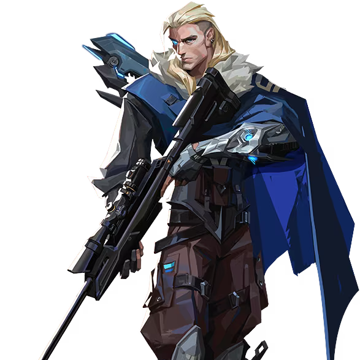

アイスボックスのマップ

情報・特徴
アイスボックスは高低差のある地形と狭い通路が特徴的なマップで、素早いエイムと戦術的な動きが求められます。また、AサイトとBサイトには多くの隠れ場所があり、戦術的な攻撃と防御が必要です。
このマップは特に近接戦闘が多く発生するため、ショットガンやサブマシンガンが有効な場合が多いです。
全体マップ・マップの詳細
アイスボックスのおすすめ構成
アイスボックスでは、高低差を活用できるエージェントや範囲攻撃を持つエージェントが効果的です。「ジェット」や「レイズ」などが特に有用です。また、「ヴァイパー」や「サイファー」などのエリアコントロール能力を持つエージェントも有効です。
| おすすめチーム構成 | ||||
|---|---|---|---|---|
 ジェット |
 ゲッコー |
 ソーヴァ |
 ヴァイパー |
 サイファー |
アイスボックスの基本的な攻め方
Aサイト側の立ち回り
アイスボックスのAサイトを攻める際は、AメインとAスノーマンを迅速に制圧することが重要です。スモークやフラッシュを使用してクリアリングを行い、安全にサイトに侵入します。また、高所からの攻撃も効果的です。
Bサイト側の立ち回り
アイスボックスのBサイトを攻める際は、BロングとBホールの制圧が重要です。特にBロングは長距離の射線が通るため、スナイパーライフルが有効です。スモークやフラッシュを使用してクリアリングを行い、安全にサイトに侵入します。
アイスボックスの基本的な守り方

Aサイト側の立ち回り
Aサイトを守る際は、AメインとAスノーマンを抑えることが重要です。高所からの射線を活用し、敵の侵攻を防ぎます。
Bサイト側の立ち回り
Bサイトを守る際は、BロングとBホールを抑えることが重要です。Bサイトは広範なエリアをカバーする必要があるため、適切なポジショニングと迅速なローテーションが求められます。